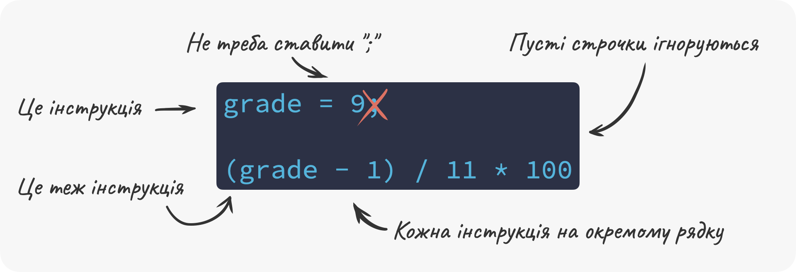
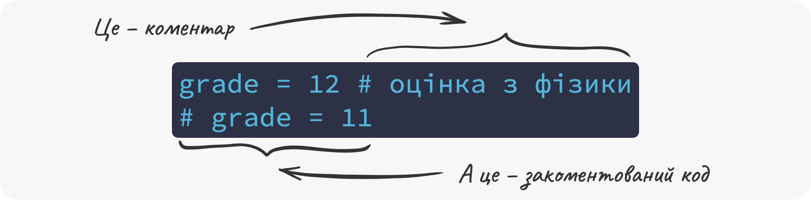

Глава 5 Синтаксис
⏱️ Час на опанування теми: 15 хвилин
🤷 Для чого ми це вивчаємо:
- закріпити правила написання коду у Python
- уникати тривіальних помилок пов’язаних з неправильно написаним кодом
🔑 Результати навчання:
- правильно розміщувати інструкції
- правильно розставляти пробіли
- коментувати код
- називати змінні
Синтаксис 🇬🇧 syntax – це правила за якими ми пишемо код ✍️. І у цій главі ми покажемо тільки найважливіші з них. Звичайно, ми не будемо зазначати усі можливі, тому що вивчати правило має сенс тільки тоді, коли воно знадобиться.
5.1 ✍️ Розміщуємо інструкції на окремих рядках
Під інструкцією 🇬🇧 statement ми будемо розуміти синтаксичну одиницю яка виражає певну дію. Наприклад, створення нової змінної або присвоєння нового значення вважається однією інструкцією. Також інструкцією є будь-який вираз, виклик функцій тощо. Тобто все що ми робили до цього є інструкціями.
У Python зазвичай кожну інструкцію ми пишемо в окремому рядку. Наприклад:
grade = 9
(grade - 1) / 11 * 100## 72.72727272727273У Python інструкції можна також записати в один рядок і відокремити крапкою з комою (;). Але це вважається ознакою поганого стилю 🤡, тому що код в таких випадках складніше зрозуміти 🤔.
Python буде ігнорувати пусті рядки. Наприклад, попередній код є еквівалентним наступному коду. Зверніть увагу, що нижче приведений код має два пусті рядки:
grade = 9
(grade - 1) / 11 * 100## 72.72727272727273Такі пусті рядки ми будемо використовувати для того, щоб відділити частини коду і покращити читабельність 🤓. Про це ми поговоримо детальніше в Додатку C.

До речі, в одній клітинці записника Colab може міститись скільки завгодно інструкцій. Якщо остання інструкція – це вираз або виклик функції який повертає значення – це значення буде надруковано під клітинкою, коли ми її виконаємо:
temp_c = 23
temp_c
temp_c * 9 / 2 + 32## 135.5Зверніть увагу, що у попередньому випадку, значення temp_c не було надруковано, тому що це не була остання інструкція. Якщо ж ми хочемо надрукувати значення виразу чи змінної десь в середині клітинки, ми можемо використати функцію print():
temp_c = 23
print(temp_c)
temp_c * 9 / 2 + 32## 23## 135.5А ось кількість інструкцій в одній клітинці – це знову ж таки про стиль 🎩 написання коду, про який ми поговоримо у Додатку C.
5.2 🫙 Ставимо пробіли
Зазвичай, Python буде ігнорувати пробіли 🇬🇧 spaces у коді. Наприклад, інструкція x = 1 та x=1 має одне і те саме значення для Python. Так само як і наступний виклик функції abs(x) та abs (x): Python буде інтерпретувати їх однаково. Проте для нас це буде важливо, тому що це впливає на читабельність 🤓 коду, і про це ми поговоримо більш детально у нашому старому і доброму Додатку C. Зараз ми тільки домовимось не ставити пробіл перед дужками у викликах функцій (пишемо abs(x) замість abs (x)) і додавати пробіли між опертором та операндами (пишемо x = 1 замість x=1).
5.3 📬 Використовуємо коментарі
Для того, щоб зробити код більш зрозумілим, ми будемо часто писати коментарі 🇬🇧 comments в коді. Коментарі пояснюють для чого ми написали ті чи інші інструкції. Щоб додати коментар у Python, треба почати рядок тексту із символу #. Все що буде написано праворуч від такого символу буде ігноруватись, тобто не сприйматись як код:
# Рахуємо скільки секунд в одній добі. Цей коментар не буде сприматись як код.
60 * 60 * 24## 86400Ми навіть можемо писати коментар в тому ж рядку що й інструкція, почавши його з #:
grade = 12 # оцінка з фізикиТакож, нам буде дуже зручно закоментувати 🇬🇧 comment out деякі рядки коду, наприклад, коли ми будемо експериментувати 🧪. У зазначеному внизу випадку, рядок grade = 11 не буде виконаний, тому що починається з #. Тому наш код поверне 12 замість 11:
grade = 12
# grade = 11
grade## 12Не забувайте подивитись вправи, щоб повністю опанувати коментарі. Вам може здатись, що ваші програми ніхто не буде бачити. Проте буде один, але дуже важливий читач – майбутній ви. І повірте, майбутній-ви буде дуже вдячний за коментарі.

5.4 🪪 Називаємо змінні
У Python імена складаються з символів Юнікоду, але ми будемо використовувати тільки латинську абетку. Простими словами, для імен змінних ми будемо використовувати літери з англійської мови 🇬🇧.
Ми можемо надати змінній будь-яке ім’я і існує всього лише декілька правил:
ім’я повинно починатись або з малої 🔡 чи великої 🔠 літери або з підкреслення (
_)# допустимі імена _rock_ = 0.5 paper = 10 Sissors = 2ім’я не може починатись із цифри 🔢
# недопустимі імена 10pen = 10ім’я повинно складатись із цифр 🔢, літер (малих 🔡 та великих 🔠) та підкреслення (
_)# допустимі імена long_name_with_numbers_42 = 10 a_ = 24 CamelCase = 345 VAR = 3 # недопустимі імена a b = 30 dog-cat = 1імена змінних чутливі до регістру
# ці змінні різні dog = 1 DOG = 2
Ще одне неформальне правило, якого ми будемо притримуватись – не давати імена змінним, які вже зарезервовано для вбудованих 🇬🇧 built-in функцій (нагадуємо, вбудовані функції – це ті функції, які є частиною Python). Наприклад, це погана ідея використовувати такі імена як round, max тощо. Повний список ви можете переглянути ось тут.
У цій главі ми вивчили кілька важливих правил щодо написання коду у Python. Почали ми з інструкцій, які повинні бути зазначені на окремих рядках, далі ми розглянули використання пробілів. Ми також навчилися користуватися коментарями та називати змінні згідно з правил Python.
🤸 Вправи
# в цьому випадку 🗣️?day = 10
temp_c = 25
# переводимо температуру у Цельсіях у температуру у Фаренгейтах
temp_f = (temp_c * 9 / 5) + 32
x = 29.99; round(x);radius = 5
height = 10
area = pi * radius ^ 2
volume = area * height
print(volume)
radius = 5
height = 10
area = pi * radius ^ 2
volume = area * height
# print(volume)
tva=100 в правильних місцях ✍️:dr_strangefirst day2023yearAPI_KEYmaxday, якщо ми виконаємо наступний код 🤔:day = 10
# day = 7
day = 2
# day = 4
_____, щоб роздрукувати значення також змінної loki 🦊:loki = 12
thor = 9
_____(loki)
loki + thor